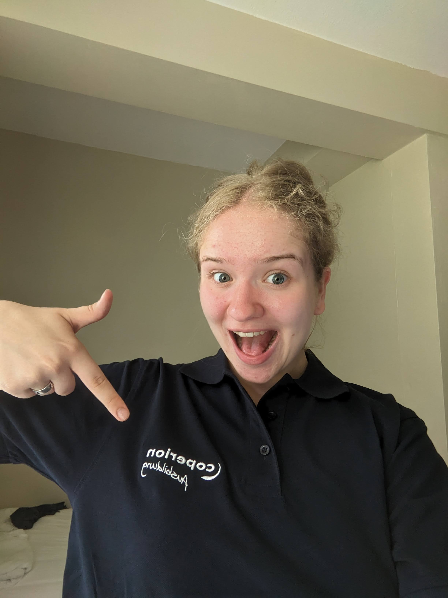
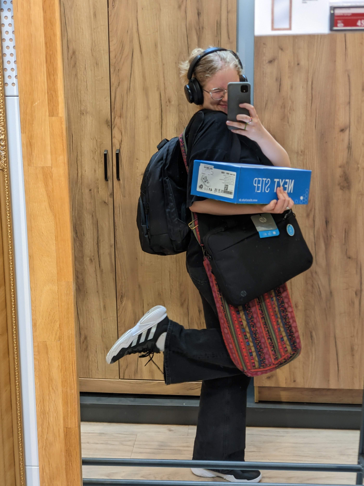
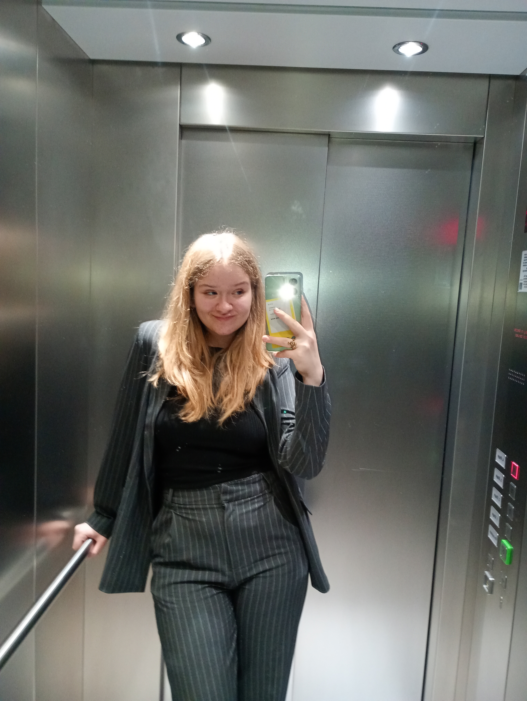
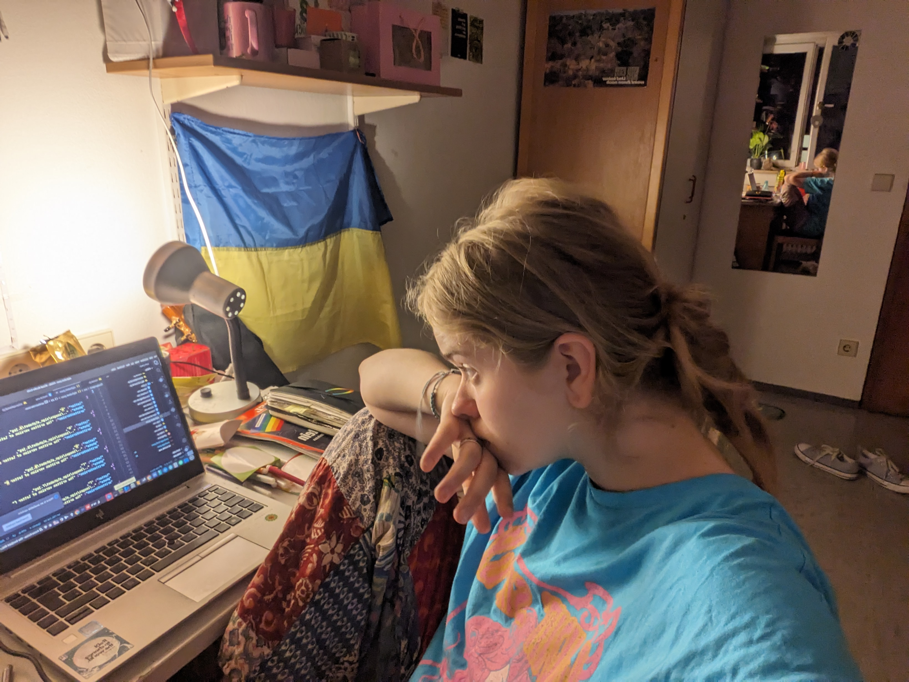
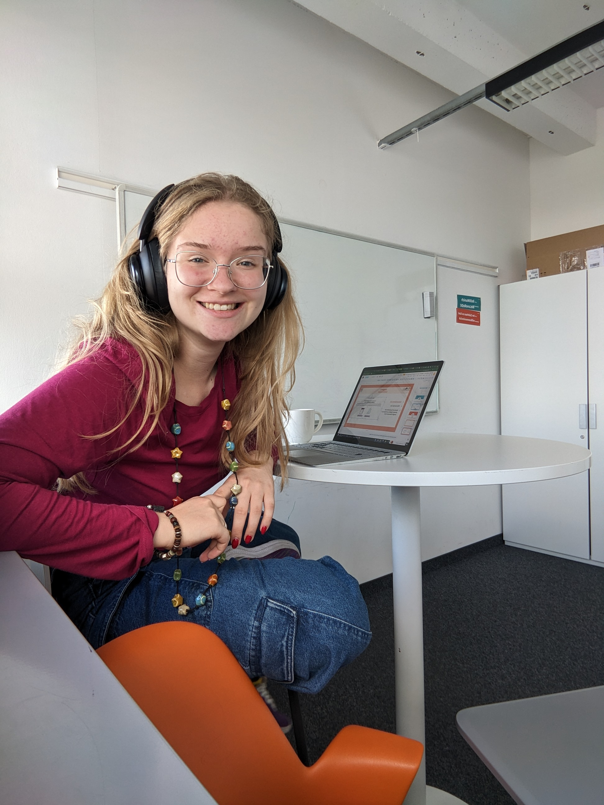
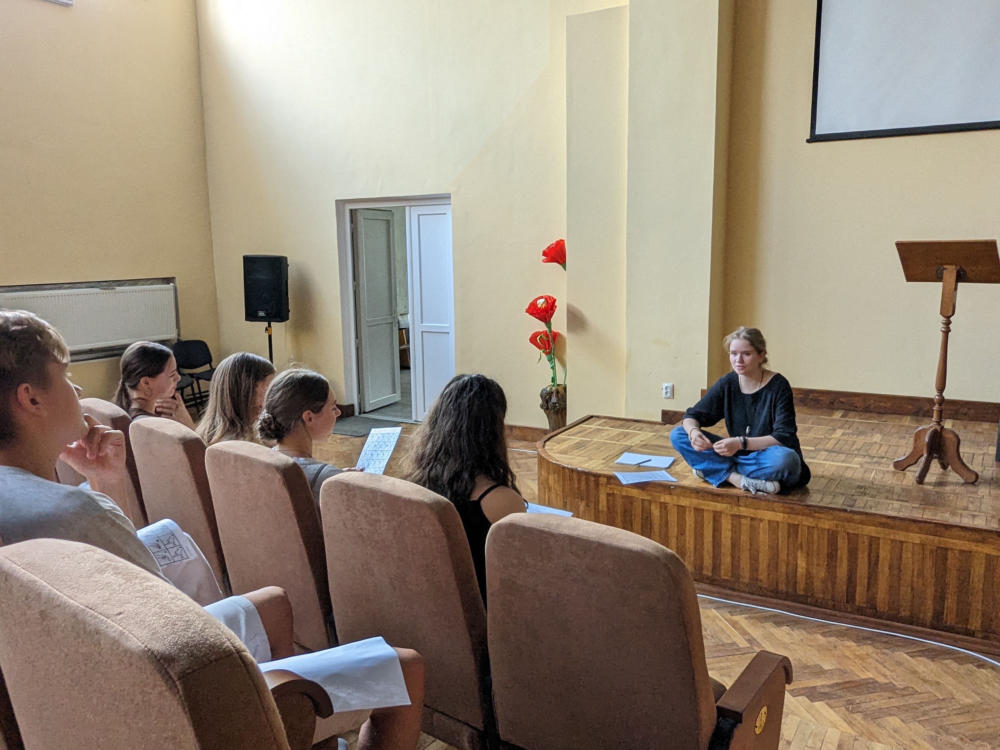
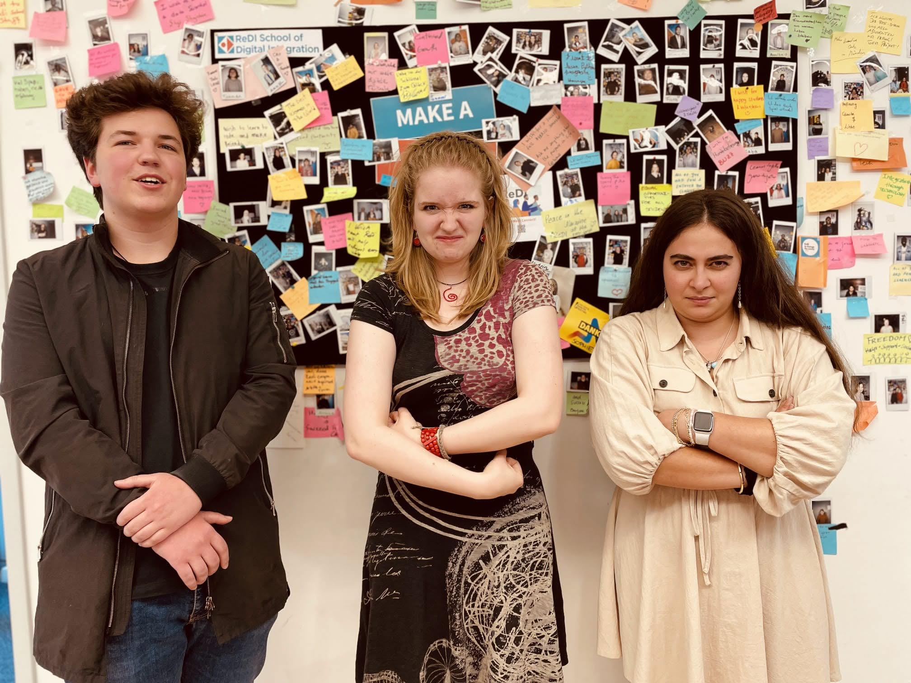
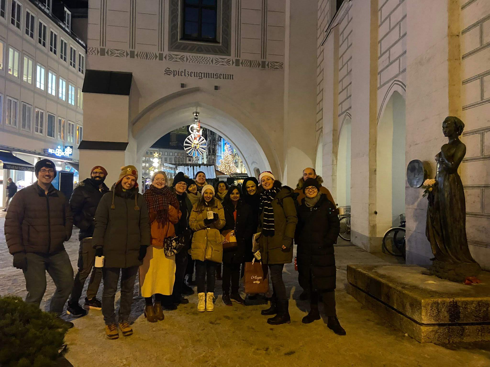

In this section, I share a little bit about myself, including my background, experiences, and what inspires me.
I’m a 19-year-old Ukrainian woman, currently based in Germany, passionate about technology and coding. My
journey has been shaped by curiosity, determination, and a desire to continuously grow. Take a look around to
learn more about my personal and professional path, as well as the values that drive me.
Job Section
Programming is my passion, and this section showcases my journey in the world of coding. I work with various
languages and frameworks, continuously honing my skills to stay on top of industry trends. From building small
projects to tackling complex challenges, I share the process behind my work. This section also highlights some
of my personal projects and contributions to open-source communities. Whether you're a fellow coder or someone
interested in the tech world, there's something here for you!



Programming Section
Programming is my passion, and this section showcases my journey in the world of coding. I work with various
languages and frameworks, continuously honing my skills to stay on top of industry trends. From building small
projects to tackling complex challenges, I share the process behind my work. This section also highlights some
of my personal projects and contributions to open-source communities. Whether you're a fellow coder or someone
interested in the tech world, there's something here for you!


Teaching Section
In addition to coding, I’ve always had a passion for teaching and sharing knowledge. I believe that learning is
a lifelong journey, and I enjoy helping others expand their skills. In this section, you’ll find details about
my teaching experiences, the subjects I've covered, and how I approach learning with my students. Whether it's
explaining technical concepts or guiding someone through a project, teaching allows me to make a positive
impact. Join me as I share my perspective on the power of education and the joy of helping others grow.



Courses & Certifications Section
This section details the courses I’ve taken and the certifications I’ve earned throughout my journey. From
formal education to online courses, I am always looking for ways to expand my knowledge base. Each certification
represents a step forward in my professional growth and serves as a testament to my commitment to learning.
Here, you can also see some of the specialized training I’ve completed in areas like web development, software
engineering, and data science. If you're interested in the qualifications that have shaped my career, this
section is for you.